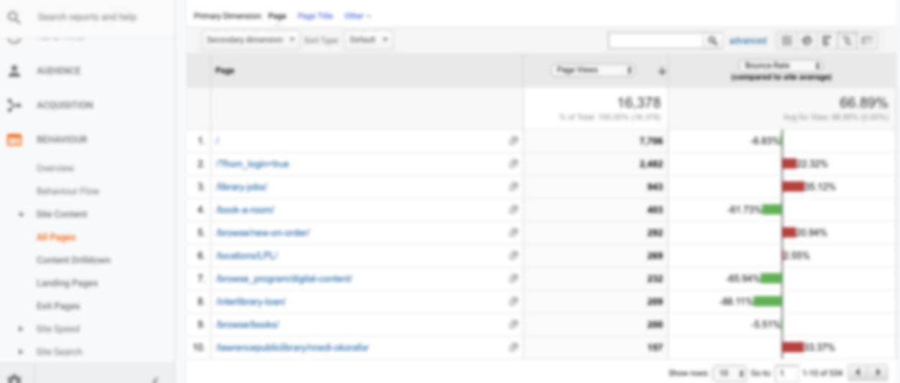
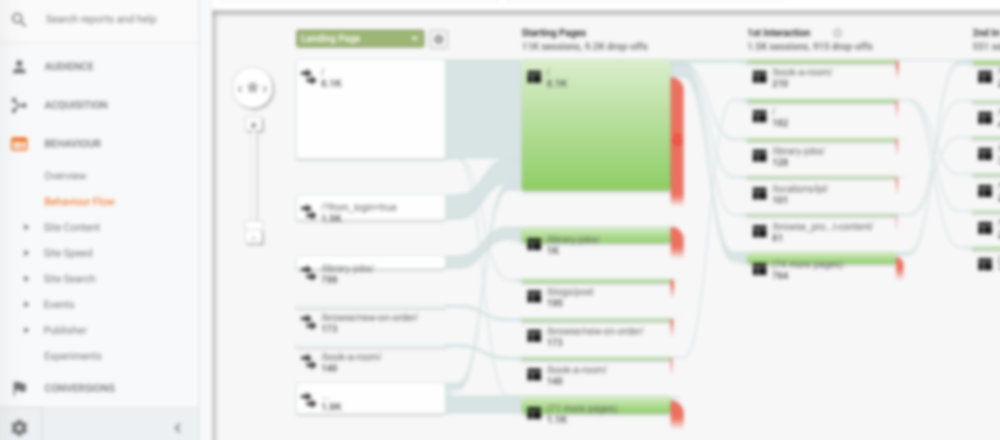
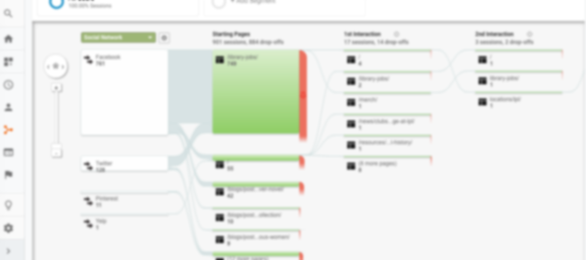
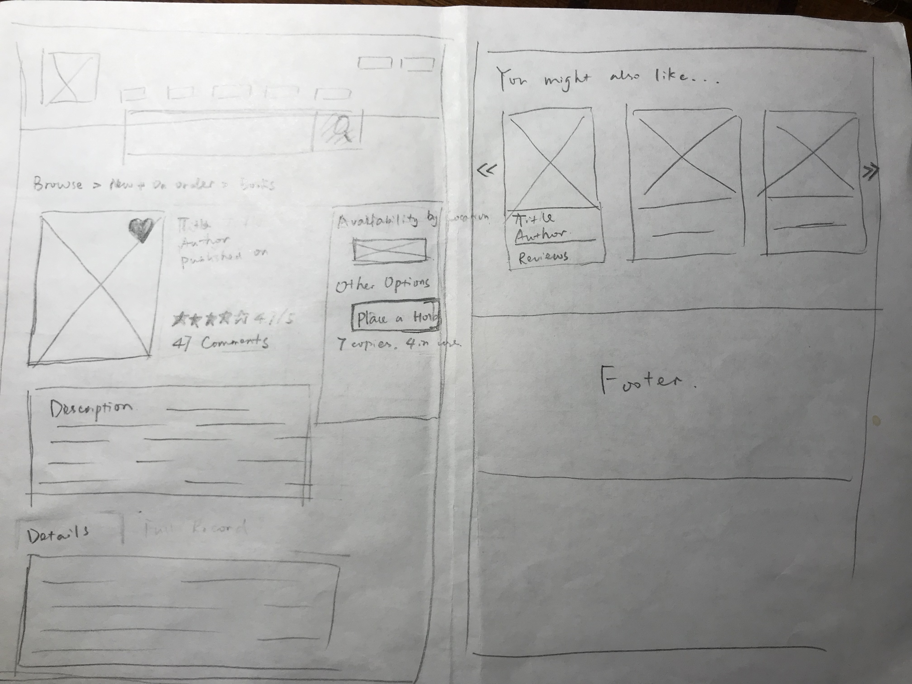

Redesigning a local library website — a UX case study
Our local library is like a big mine treasure for our local residents. It houses amounts of useful resources on the website and is very easy for every user to access to and enjoy the online resources. Me, as other users, benefit hugely from our library and learn the online tutorial, borrow books, pay the overdue fees and sometimes just browse through the website and see what’s happening in our town. But it always occurs to me that sometimes I get lost while navigating the website and feel confused while clicking some buttons.
User Research
I volunteered at our local library and did some data analysis in partner with the marketing coordinator. A big ThankYou to the staff there who were willing to let me access to their website data.
The main data I got were coming from Google Analytics. There were a couple of things that I need to clarify. Since there was no way that I can redesign the whole website, then I delved deeply into two sections of the website which the bounce rate and exit rate were relatively high while it shouldn’t be that since both webpages were information heavily ones which the users should linger on much more time instead of leaving in a second.
  After data analyzing, I found that the ‘Jobs’ and ‘ New+On Order’ website pages had the relatively bad online performances. Both were among the top ten most popular pages for the website, while both had extremely high bounce rate and exit rate which means that the users do not find the useful information then they left immediately.
The data also showed that the users skipped most of the contents on the homepage and went directly to the footer. This phenomena was quite unusual since footer should be the last place that the users want to explore. The only reason that users went to the footers directly was that they were goal oriented, in other words, they bear in mind what they need and wanted to get them in a more straightforward way.
Persona
The persona that I created was quite neutral. Local resident who was looking for library related jobs and also wanted to explore more about the website.
Customer Journey Map
I created two customer journey maps for the persona that I created. One was for job application, the other was for the new+on order website page.

Sketches
UI Design


My thoughts for my design.
For the homepage, since users chose to skip scanning through the contents on the homepage and went directly to the footer to find what they need, it was a great idea to provide them with much faster entrance on the website. Then I highlighted a couple of items which interested them the most based on the statistics from Google Analytics.
For new+on order page, as you can see, the original website was bland without providing readers enough information about the listed items. As far as I was concerned, it could be designed to present users more engaging information with showing the ranks, reviews, comments numbers and staff picks, etc..
For library jobs website page, it had the same issue as the new+on order, too insipid to attract users’ attention. I was trying to list as much information as I can and add Call-To-Action button on the right corner which was in attempt to increase conversion rate on the website.
Sum Up
I am a full time mom and UI/UX enthusiast. I have been self taught UI/UX for more than two years. I know there are tons of pitfalls and problems for my design, but I still learn hugely from the whole process. As what Confucius said, “I hear and I forget. I see and I remember. I do and I understand.”
Please do not hesitate to leave your response to me. It means a lot! I appreciate any comments and feedbacks!